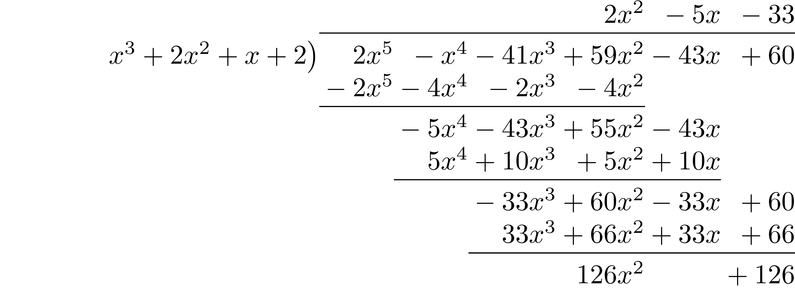
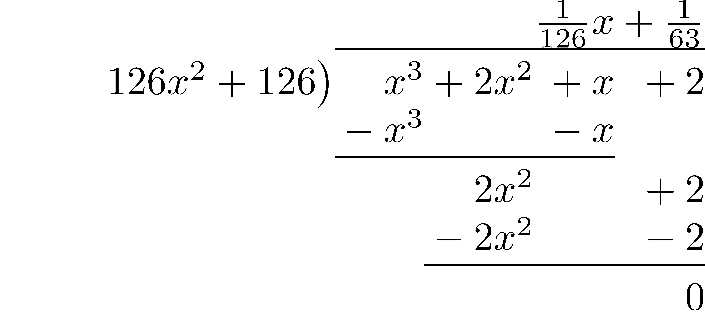

7.3 Properties of Polynomial Rings
The properties of irreducible (prime) elements and factorizations is very important in the study of the integers and is dependent upon the integral domain properties. We have also seen that certain polynomial rings are also integral domains. In this section we will see how the factorization of integers into prime factors can be extended to the ring of polynomials. Throughout this section we will let \(S\) be a general integral domain (you can think of it as \(\mathbb{Z}\), \(\mathbb{Q}\), \(\mathbb{R}\), or \(\mathbb{C}\)) and let \(S[x]\) be the ring of polynomials with coefficients from \(S\).
7.3.1 Polynomial Division
We begin this generalization by finding a generalization of the division algorithm. We see from the Division Algorithm for Integers that we need to have some type of ordering for the elements of our integral domain. We will call such an ordering a Euclidean function.
Definition 7.4 Let \(R\) be an integral domain. A Euclidean function on \(R\) is a function \(f\) from \(R\setminus \{0\}\) to the non-negative integers satisfying the fundamental division-with-remainder property.
- If \(a\) and \(b\) are in \(R\) and \(b\) is non-zero, then there exist \(q\) and \(r\) in \(R\) such that \(a=bq+r\) and either \(r=0\) or \(f(r)<f(b)\).
Since \(S\) is an integral domain, we see that \(S[x]\) is also an integral domain (Theorem 7.9). We can now use the degree function of the polynomial as a Euclidean function and state a Division Algorithm for Polynomials that makes \(S[x]\) a Euclidean domain, when \(S\) is a field.
The reason that we need \(S\) to be a field is to allow for division of the coefficients in the division algorithm. For example in \(\mathbb{Z}[x]\), if \(a(x)=x^2\) and \(b(x)=3x\), the \(r(x)\) in the division algorithm would need to be \(3x\).
Proof. Let \(S\) be a field and let \(a(x)\) and \(b(x)\) be polynomials, with \(b(x)\) not the zero polynomial.
Let \[T= \left\{ a(x)-b(x)\cdot s(x) | s(x) \in S[x]\right\}\] and from the well-ordering property we can choose an \(r(x)\) in \(T\) with minimal degree. So \[a(x)=b(x) q(x) + r(x)\] for some \(q(x)\in S[x]\).
Let \(m=\mathrm{degree}(b(x))\) and \(n=\mathrm{degree}(r(x))\), and let \(b_m\) be the leading coefficient of \(b(x)\) and \(r_n\) be the leading coefficient of \(r(x)\). If \(m\geq n\), \[a(x)-b(x)\left(q(x)- \frac{r_n}{b_m} x^{m-n}\right)= r(x)-\frac{r_n}{b_m} x^{m-n} b(x) \] which is an element of \(T\) with lower degree than \(r(x)\), contradicting the choice of \(r(x)\) to be an element of \(T\) with minimal degree. Therefore, \(\mathrm{degree}(r(x))<\mathrm{degree}(b(x))\).
For the uniqueness of \(q(x)\) and \(r(x)\), we assume that there are two pairs of such functions such that \[a(x)=b(x) q_1(x)+r_1(x) \quad \mbox{and} \quad a(x)=b(x) q_2(x)+r_2(x)\] with the degrees of \(r_1(x)\) and \(r_2(x)\) being less than the degree of \(b(x)\). Subtracting the two equations and rearranging terms gives us \[b(x) \left( q_1(x)-q_2(x) \right) = r_2(x)-r_1(x).\] Since the degree of the polynomial on the right side of the equation is less than the degree of \(b(x)\), \((q_1(x)-q_2(x))\) must be the zero polynomial. So \(q_1(x)= q_2(x)\) and thus implying that \(r_1(x)=r_2(x)\). And we have proven the uniqueness of the \(q(x)\) and \(r(x)\).Related Content Standards
- (HSA.APR.6) Rewrite simple rational expressions in different forms; write \(\frac{a(x)}{b(x)}\) in the form \(q(x)+\frac{r(x)}{b(x)}\), where \(a(x)\), \(b(x)\), \(q(x)\), and \(r(x)\) are polynomials with the degree of \(r(x)\) less than the degree of \(b(x)\), using inspection, long division, or, for the more complicated examples, a computer algebra system.
Take some time and work through some examples of long division of polynomials and compare these with the procedures in the long division of integers. It is through these connections between the two processes that students are able to understand and retain the knowledge of the long division algorithm for polynomials.
We can now extend the properties of factors and prime (or irreducible) elements of the integers to the polynomial ring.
Definition 7.5 Let \(S\) be an ring and \(S[x]\) be the corresponding ring of polynomials. Let \(a(x)\) and \(b(x)\) be polynomials in \(S[x]\) with \(b(x)\) not the zero polynomial. We say that \(b(x)\) divides \(a(x)\) if there exists a \(q(x)\) in \(S[x]\) such that \(a(x)=b(x)\cdot q(x)\). In this situation we also say that
- \(a(x)\) is a multiple of \(b(x)\),
- \(b(x)\) is a divisor of \(a(x)\), and
- \(b(x)\) is a factor of \(a(x)\).
We can now state the prove the Remainder Theorem and Factor Theorem for polynomials.
Proof. Applying the Division Algorithm to \(a(x)\) and \(x-c\) we see that there is a unique \(q(x)\) and \(r(x)\) such that \(a(x)=q(x)\cdot (x-c)+r(x)\) with the degree of \(r(x)\) less than the degree of \(x-c\). Therefore, \(r(x)\) is a constant polynomial that we will call \(r\). Since the evaluation function is a ring homomorphism we have that \[a(c):= \phi_c(a(x))=\phi_c(q(x))\cdot \phi_c(x-c) + \phi_c(r).\]
Since \(\phi_c(x-c)=c-c=0\) and since \(0\cdot \phi_c(q(x))=0\), we have that \(a(c)\) is the remainder.This leads us directly to the Factor Theorem since \(a(x)=q(x)\cdot (x-c) + a(c)\).
Related Content Standards
- (HSA.APR.2) Know and apply the Remainder Theorem: For a polynomial \(p(x)\) and a number \(a\), the remainder on division by \(x-a\) is \(p(a)\), so \(p(a)=0\) if and only if \((x-a)\) is a factor of \(p(x)\).
7.3.2 GCF and LCM for Polynomials
Definition 7.6 Let \(a(x)\) and \(b(x)\) be in \(S[x]\), not both the zero polynomial. We say that a greatest common divisor (also called the greatest common factor) of \(a(x)\) and \(b(x)\) is a polynomial \(d(x)\) such that
- \(d(x)\) divides both \(a(x)\) and \(b(x)\), and
- if \(u(x)\) divides both \(a(x)\) and \(b(x)\) for some polynomial \(u(x)\), then \(u(x)\) divides \(d(x)\).
Note that there is not a single greatest common divisor of two polynomials since constant multiples of a greatest common divisor may also be greatest common divisors. In the situation that \(S\) is a field, we can multiply a greatest common divisor by the multiplicative inverse of its leading coefficient and we now have a monic polynomial (a polynomial with leading coefficient of the multiplicative identity) that is a greatest common divisor. This monic polynomial is unique and so we define \(\mathrm{gcd}(a(x),b(x))\) to be the unique monic greatest common divisor of \(a(x)\) and \(b(x)\).
Following the line of proofs of the integers, we can prove a theorem analogous to Theorem 7.2 for polynomials.
This theorem is the basis for a generalization of the Euclidean Algorithm to the polynomials.
Theorem 7.14 (Euclidean Algorithm for Polynomials) Let \(a(x)\) and \(b(x)\) be two polynomials in \(S[x]\) for a field \(S\), with \(\mathrm{degree}(a(x))>\mathrm{degree}(b(x))\). Then the greatest common divisor of \(a(x)\) and \(b(x)\) can be found using the following algorithm.
- [Step 1] Apply the division algorithm to find polynomials \(q(x)\) and \(r(x)\) such that \(a(x)=b(x)q(x)+r(x)\) with \(0\leq \mathrm{degree}(r(x))<\mathrm{degree}(b(x))\).
- [Step 2] If \(r(x)\) is the zero polynomial, then is \(\mathrm{gcd}(a,b)\) is \(b(x)\) times the multiplicative inverse in \(S\) of its leading coefficient.
- [Step 3] While \(r(x)\) is not the zero polynomial, replace \(a(x):=b(x)\) and \(b(x):=r(x)\) and apply the division algorithm to the new \(a(x)\) and \(b(x)\) to generate a new pair of polynomials \(q(x)\) and \(r(x)\). Once \(r(x)\) is the zero polynomial, the value of \(b(x)\) is a greatest common divisor of the original polynomials \(a(x)\) and \(b(x)\) and \(\mathrm{gcd}(a,b)\) is this polynomial times the multiplicative inverse in \(S\) of its leading coefficient.
In order to better understand the Euclidean Algorithm for Polynomials we will use the algorithm to find the unique monic greatest common divisor of \(a(x)=2x^5-x^4-41x^3+59x^2-43x+60\) and \(b(x)=x^3+2x^2+x+2\).
The first step is to use the division algorithm to find the quotient and remainder of \(a(x)\) divided by \(b(x)\). One of the most efficient methods of finding this quotient and remainder (other than using a computer algebra system) is through long division of polynomials.

Therefore, \[a(x)=b(x) \cdot (2x^2-5x-33) + (126x^2 + 126)\] and so we know that \(\mathrm{gcd}(a(x),b(x))= \mathrm{gcd}(x^3+2x^2+x+2, 126x^2+126)\). Using long division of polynomials we can find the new quotient and remainder for these two polynomials.

So, \[x^3+2x^2+x+2 = (126x^2+126)\left(\frac{1}{126}x+\frac{1}{63}\right)+ 0\] and we see that \(126x^2+126\) is a greatest common divisor of \(a(x)\) and \(b(x)\). Therefore, the unique monic greatest common divisor of \(a(x)\) and \(b(x)\) is \(x^2+1\).
7.3.3 Irreducible Polynomials
We now turn our attention to studying the analogy to prime numbers in the polynomial ring.
When \(S\) is a field, we see that the units of \(S[x]\) are the constant polynomials since the degree of the product of two polynomials in \(S[x]\) is equal to the sum of the degrees of the factors.
Notice that since \(\sqrt{2}\) is irrational that \(x^2-2\) is irreducible in \(\mathbb{Q}[x]\) but has the factorization of \(x^2-2=(x-\sqrt{2})(x+\sqrt{2})\) in \(\mathbb{R}[x]\) and \(\mathbb{C}[x]\). This means that the set of irreducible polynomials depends upon the field from which the coefficients reside.
The following is an essential theorem in understanding factorization of polynomials and is one of the main consequences of the concept of irreducible elements. However, the proof of the theorem requires building up significant machinery in abstract algebra and so we will not include it here.
With this property involving the factorization of polynomials that we use on a regular basis we can also prove a property similar to that of the Fundamental Theorem of Arithmetic for integers.
The proof of this theorem is very similar to the method used to prove the Fundamental Theorem of Arithmetic, and so we will not include the details here. However, this theorem demonstrates the importance for understanding the irreducible polynomials in \(\mathbb{R}[x]\) and \(\mathbb{C}[x]\) in the process of understanding the properties of polynomials with real and complex coefficients.
The main result in this area is the Fundamental Theorem of Algebra.
There are many different methods to prove this result, but the primary method uses the machinery of complex calculus.
Related Content Standards
- (HSN.CN.9) Know the Fundamental Theorem of Algebra; show that it is true for quadratic polynomials.
7.3.4 Exercises
Find a prime factorization of the following polynomials in \(\mathbb{Z}[x]\), \(\mathbb{Q}[x]\), \(\mathbb{R}[x]\), and \(\mathbb{C}[x]\).
- \(4x^3-2x^2+2x-1\)
- \(x^3-1\)
- \(6x^2-13x-5\)
- \(x^5-2x^4-2x^3+4x^2-3x+6\)
Explain how the domain of the variable \(x\) affects the number of solutions to the equation \[(x^4-1)(4x^4-9x^2+2)=0.\]
Find the unique monic prime factorization of the polynomials in \(\mathbb{Q}[x]\), \(\mathbb{R}[x]\), and \(\mathbb{C}[x]\).
- \(x^4+4x^2+4\)
- \(7x^4-28\)
- \(2x^4-5x^2-3\)
- \(9x^4+440 x^2-49\)
- \(x^{106} -x^{100}\)
- \(4x^4+12x^3-86x^2-92x-48\)
- \(x^4-x^2-2\)
- \(x^2-\pi\)
- \(2x^4-x^3-19x^2+2x+30\)
- $a x^2 + bx + c $ based on the various possible values of \(a\), \(b\), and \(c\) with \(a,b,c \in \mathbb{Z}\).
Prove Theorem 7.13 using the proof of Theorem 7.2 as an outline.
Prove that if \(f\) is a Euclidean function on an integral domain \(R\), then \(f(a)\leq f(b)\) for all non-zero \(a\) and \(b\) in \(R\).
Find the value \(c\) so that \((x-3)\) is a factor of the polynomial \(p(x)\). \[p(x)=cx^3-15x-68\]
Find the monic greatest common divisor of the polynomials \(a(x)=4x^5+12x^4+20x^3+16x^2+16x+4\) and \(b(x)=6x^5+12x^4+18x^3+12x^2+12x\).